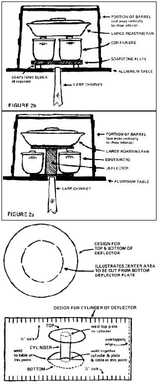

Back in the late 1800's a fellow named Edward Atkinson devised a highly efficient low-cost cooker called the Aladdin oven . . . and the reasoning behind his invention is just as timely now as it was then.
By his own account, Atkinson became concerned with the economics of contemporary cooking methods after reading some statistics on the cost of living. It seemed to him that a disproportionate part of the household budget was spent on food and its preparation, and he began an investigation that was to occupy him over the next ten years.
Atkinson's studies revealed that the ordinary kitchen practices of the 1800's required the burning of far in excess of two pounds of coal for every pound of food processed. He published no comparable statistics for the use of wood, natural gas, etc .... but it's obvious that the cooking techniques of the day were just as wasteful with one fuel as with another.
Today, although I have no current figures to back me up, I'm convinced that the same problem is still with us in a slightly different form. The electricity which is now so widely used in the kitchen is largely produced by the burning of coal and oil . . . and I'm not at all sure that this fossil-fuel-to-electricity-to-"modern"-appliance conversion is any more efficient than the end user's direct consumption of coal was in 1890. Hence my interest in a very-low-energy-consumption, but forgotten, 19th-century invention.
Atkinson's answer to the high cost of cooking was a device that enabled one pound of kerosene to do the work of 50 to 70 pounds of coal. It took its name from the heat source: none other than the familiar Aladdin lamp.
The Aladdin oven is really a very simple affair. As Fig. 1 shows, the cooker itself is merely two-thirds of a common wooden barrel (or some other container made of a material that conducts heat poorly . . . this being the factor that governs the oven's effectiveness). The drum is inverted over a sheet-iron table pierced in the center by a hole about three inches in diameter. The opening does not lead directly to the cooking chamber, but is closed off on the inside by a deflector made of tin (see Fig. 2a) . . . an arrangement which radiates heat into the interior without drying the food or tainting it with the products of combustion.
The heat source-the trusty Aladdin, properly tended to ensure perfect burning-is placed under the table so that the top of the chimney is just inside the deflector's base but doesn't touch the sides of the opening (Fig. 2b). Food is placed on and around the deflector, as shown in Fig. 2a (or, alternatively, on a raised soapstone plate as in Fig. 2b) . . . and the heat from the lighted lamp cooks the dishes slowly and thoroughly to a state of delicious tenderness.
The general principle behind such a device is, of course, very old. Atkinson's invention has been described as one of the most perfect substitutes for the Colonial brick oven (itself a descendant of the brick and stone baking chambers excavated at Pompeii) and of the Polynesian earth oven or imu. The 19th-century inventor's contribution was to adapt the idea to the use of a novel heat source. Apparently Atkinson worked hard on his discovery: He records that over a thousand lamp-powered cookers were made by hand while the design was under development.
Kerosene lantern cookery received a most thorough and practical test on a large scale when it came to the attention of Booker T. Washington, then head of Tuskegee Institute in Alabama. He ordered the construction of a giant Atkinsontype oven made of pine planks plastered on the inside and heated by five lamps. This monster was used to feed over 600 adult students, and the tough local beef and mutton were reportedly rendered tender and delicious by its slow and even processing. My own more recent experiments have been just as successful and have convinced me that kerosene-fired slow cooking is due for a revival.
Rather than trying to build an oven exactly to Atkinson's specifications, I constructed my version of his device with an eye to what was available. The barrel was easy enough to obtain, since I had a few of the 30-gallon size which I often use to make vinegar from my own hard apple cider. A friend with a table saw cut one of the casks into one-third and two-thirds sections for me. I kept the shorter end for making vinegar by the slow, small-batch method and gave the longer one a thorough cleaning by scraping away all the char on the inside and then washing the interior. I didn't plaster the inside, as that would have made the oven too heavy to handle easily.
Next, I looked around for a piece of sheet iron three feet square for my tabletop. A tinsmith I contacted suggested substituting sheet aluminum (for both the tabletop and the deflector) and it took about a week before he could cut and fit the parts and rivet them together. I salvaged an antiquated metal washtub stand as a support, and the Aladdin oven was complete.
One refinement I added later was an old oven thermometer of the type once found in the doors of commercial kitchen ranges. This gadget allows me to regulate the cooker's heat precisely, use conventional oven cookery recipes and produce perfectly cooked meals with little or no experimentation.
My first hint on lamp-powered cooking concerns thrift: Atkinson claims that a pound of kerosene-a fraction over one pint-will process 20 to 30 pounds of food . . . providing the oven is loaded to capacity at each use . It makes no sense to heat the contraption merely to cook a couple of hamburgers or to bake a potato or two. The Aladdin oven, like any large-capacity cooking equipment, is most economical when used to prepare an entire dinner instead of just part of one.
I recommend cookware made of Pyrex or some other heatresistant glass-ceramic combination for use in the Aladdin oven. The advantage is that the food can be served-and the leftovers stored-in the same containers, thus eliminating a great deal of dishwashing. On camping expeditions, when there was transportation for the oven, I've used cast-iron pots (for their durability) in the stove and found them quite satisfactory. I don't advocate aluminumware for any purpose connected with food preparation.
Another type of vessel that should serve well with this cooker is the familiar clay beanpot, available in a number of sizes. Such earthenware containers hold heat effectively and food prepared in them can be kept warm longer than in either Pyrex or cast iron. These clay casseroles, however, should be checked carefully for well-fitting covers. Glass and metal pots are manufactured with a closer fit between the lid and the vessel, and this tight closure prevents the escape of the natural juices and flavors so important to good cooking.
Actually-since the use of a deflector keeps the atmosphere of the Aladdin oven moist rather than dry-many dishes need not be covered at all. Meat, fish and fowl can be placed in their containers along with a couple of tablespoonfuls of water and cooked with or without lids. Only foods containing a large amount of liquid (cereals, soups, stews, etc.) really need to be covered when cooked in an Aladdin oven that is equipped with a properly installed, airtight deflector. Close fitting covers should be used on all dishes, however, if your cooker does not have an airtight deflector (see Fig. 26).
With the Aladdin oven-unlike the conventional type-there's no constant, heat-wasting opening and closing of a door to check on the food. The moist heat and low temperature make burning much less likely, and-in any case-the barrel is far too hot to lift during cooking. The oven can be raised, however, if an eyebolt is securely anchored in the top of the cask. Fasten a chain to the eye and run the links through a small block. Then place a nail or hook in the wall at a convenient place so that you can lock the cover in a raised position while you add or remove food (see Fig. 1).
Figs. 2a and 2b show the correct way to load the oven. Since the longest-cooking item on a menu is usually the meat dish, it can be placed on top of the deflector. Then, when the foods that need less processing are added, the oven need only be raised enough to permit the various containers to be arranged around the bottom of the tin cylinder. Since heat rises (and will remain trapped in the deep cover), very little will be lost during this operation.
Speaking of heat, you may be wondering whether a wooden vessel can safely contain temperatures high enough to roast food. The same thought occurred to Atkinson, who reports that he brought the internal temperature of one of his creations to 500° F and maintained that level for eight hours to see whether scorching would take place inside the barrel. It didn't.
In practice, of course, no cooking should be done at such a temperature. It's the long, slow processing of food that produces the finest results. All the meals I've cooked in my Aladdin oven have been done at less than 300° F, with the majority of dishes baked at between 200° and 250°. I can report that, at the time I gave my homemade cooker to a friend who was going to live in British Columbia, there was no apparent scorching of the interior of the barrel. You'll recall, though, that the cask had already been charred as part of its manufacture. I had carefully scraped away all the burnt wood, but the inside retained a blackened appearance and if any burning did occur I couldn't tell it from the original.
At any rate,, it's doubtful that scorching will take place if cooking temperatures are kept below 300° . . . especially if the airtight metal deflector is used. The device, as opposed to the open soapstone deflector also shown with this article, promotes a moist atmosphere which should retard any tendency of the wooden barrel to catch fire. Nevertheless, the oven should be used on a hearth or in some other place where a blaze could be contained if it did start.
Fireproof or not, the Aladdin oven is a funny-looking object . . . rather like a practical joke on a French chef. But a joke it isn't. The idea was born at a time when fuel costs were, in some cases, even higher than today's . . . and Atkinson's solution is as practical now as it was in 1890.
How about the future, when kerosene (still available at present) may become scarce and uneconomical? If that happens, the oven can be modified to burn methane gas. Preliminary experiments have shown that a small Bunsen burner -adapted to run on methane and placed inside a regular lamp chimney to direct its heat into the cavity of the deflector-could build up the oven's temperature high enough to cook food. These trials haven't been carried beyond the preparation of one full meal, but there's no doubt that conversion is possible.
Actually, I didn't write this article to convince you of the merits of the Aladdin oven. The first meal prepared in the lamp-powered cooker will do that. But here's another bonus that you may not have thought of: If a piece of your homemade contraption should break, no repairman will call. You have no ten-year guarantee, and you don't need any. After all, the device is only a portion of a barrel, some metal and a well-charged kerosene lamp . . . and what could be simpler than that?
|
FIGURE 3. PARTS OF DEFLECTOR. The deflector must designed to fit the height and diameter of the barrel section The aluminum top and bottom of the deflector must be b thirds of the diameter of the barrel's interior. The cylinder should have a diameter of between three and four inches. 1 height of the completed deflector should be one-half the height of the interior of the oven. The pattern shown for the cylinder describes a dotted line down the right-hand side. This r should overlap the opposite edge and be welded for a tight s,: The half-inch cuts on the top and bottom of the cylinder ;: tern will be folded outward at a 90-degree angle to act as additional tional support for the aluminum top. The weld between the of the deflector and the top of the cone should be made from the inside. The bottom deflector plate will have a circular h cut in it (note dotted line) the same diameter as the completed cylinder. A secure weld here will give the support needed for heavy load of the roasting pan and its contents. The deflector is best welded to the aluminum table in order to ins a tight seal. If extra support is needed, braces can be welded screwed along the edges of the deflector's top and hots; These braces should not number more than four an interfere with the placement of the cooking container |
 |
|